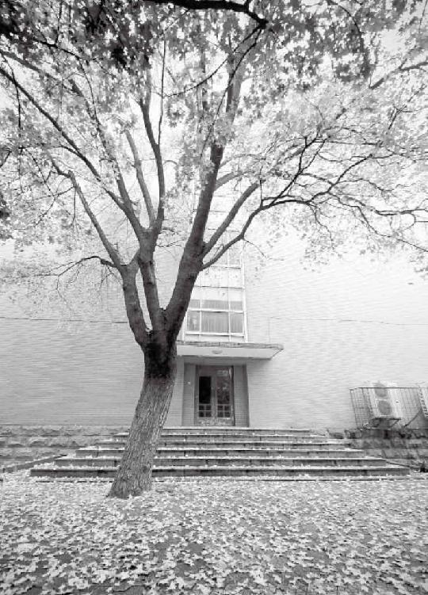
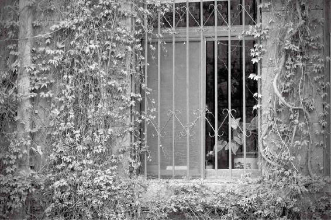
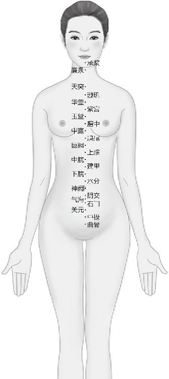
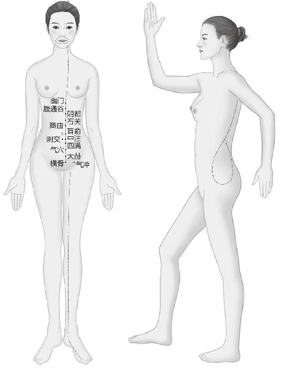
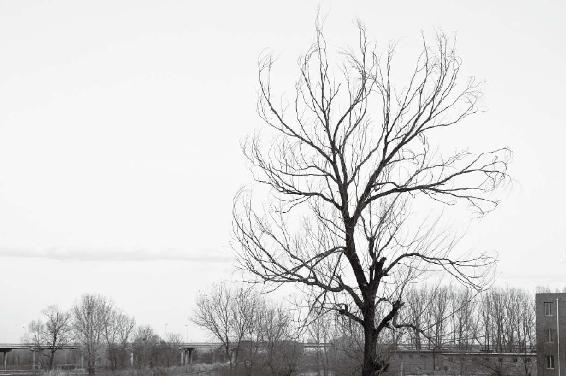
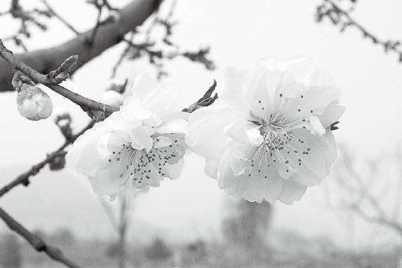

孩子正常的生活应该是白天欢蹦乱跳，不知疲倦，一到晚上八九点钟就打蔫想睡觉，可我们现在很晚了还开着灯、开着电视，每天睡觉都晚，结果就给身体一种错误的信号⋯⋯
女孩子要想避免以后做什么整形手术，就要在21岁之前学学养生，学学怎么去通任脉，促进太冲脉盛，这样来促进自己的乳房发育。否则过了21岁就别想了。
如果女人的丹田是温暖的，她的第二性征就会发育得好，脸色也会非常好看。
经文：
帝曰：人年老而无子者，材力尽邪？将天数然也？
岐伯曰：女子七岁，肾气盛，齿更发长。二七而天癸至，任脉通，太冲脉盛，月事以时下，故有子；三七肾气平均，故真牙生而长极。
“帝曰：人年老而无子者，材力尽邪？将天数然也？”
梁冬：接下来我们开始讲“上古天真论”的第二部分。
徐文兵：第二部分的内容非常重要，描述了男人和女人不同生理变化周期的状况。
梁冬：上中学的时候，我们会发现有的女同学上体育课时突然就捂着肚子不跑步了，那个时候我们很生气，凭什么她可以不跑步？我们就要呢？
男女都有生理周期，他们到底在生理周期上有什么不一样？这个周期又是如何影响我们的生命变化的呢？黄帝问他的老师：“人年老而无子者，材力尽邪，将天数然也？”
徐文兵：这是黄帝问的第二个问题。第一个问题是问为什么古人活得那么长，我们现在却半百而衰？现在是问人到了一定岁数以后，为什么就生不出孩子了？这是材力尽了？还是自然造就的呢？
其实，“材”和“力”是两个概念，“材”是物质基础，“力”是能量。
“材”和“力”是两个概念，“材”是物质基础，“力”是能量。
比如，你有一罐汽油，如果没点它，它不会变成气，不会发出光和热，也不会爆炸；再比如说有时候一个人的精子数目、成活率都还可以，这叫“材”，但这个人阳痿，就叫“有材没力”。还有人性功能挺好，但是一查精子，要么是零，要么就是百分之七八十畸形或者百分之九十都是死精子，这叫“有力无材”。
有时候一个人的精子数目、成活率都还可以，这叫“材”，但这个人阳痿，就叫“有材没力”。还有人性功能挺好，但是一查精子，要么是零，要么就是百分之七八十畸形或者百分之九十都是死精子，这叫“有力无材”。
黄帝说“人年老”，我们讲过六十岁可以称老，六十岁以前不要妄自称老。我因为长相老，三十岁时他们就叫我徐老。
梁冬：充其量称老徐就可以了。另外，“天数然也”是什么意思呢？
徐文兵：就是自然。你看前一段岐伯老讲天道的事，黄帝也学乖了，就问是不是老天爷造人就这么一套程序，到某个时间人就生不出孩子了。
是不是老天爷造人就这么一套程序，到某个时间人就生不出孩子了？
说到年老无子，我刚才说的是男人，其实女人也有这个问题，到一定岁数以后就无法怀孕生育，或者是其他的一些生理功能也会出现相应的征象，同样导致无子的结果。所以，岐伯就从两个方面来回答黄帝的问题，第一个方面他讲的是女人的生理变化周期，另一方面就讲男人的生理变化周期。

徐文兵：岐伯回答的第一句话是“女子七岁”。
梁冬：这四个字是讲女人是以七年为一个生理周期的。
徐文兵：这是我们中国人观察总结出来的。我要在这里给大家额外强调一点，为什么“中国”叫“中国”？这个“中”指什么？
梁冬：中间。
徐文兵：哪个中间？
梁冬：四海之间？
徐文兵：哪个四海？
梁冬：不知道。
徐文兵：这点让我很感慨，我们身为中国人，整天说自己是中华人民共和国公民，你问他“中”是啥意思？不知道。百分之九十九的人不知道中国的“中”是啥意思。
百分之九十九的人不知道中国的“中”是啥意思。
梁冬：您请说。
徐文兵：有人说“中”是宇宙中心，世界中心，但那时候的古人还不知道地球呢。其实“中国”的“中”是指中原，也就是黄河和长江中间这一块即河南安徽等地，因为中华文明以长江和黄河中间这一块作为发祥地的。以此为中，逐渐发展、扩展到现在这么大一个疆域，叫中国。
黄帝出生在轩辕丘，也就是现在的河南新郑。黄帝这个氏族正好就在黄河中间这个流域，因而我们讨论男女的生理变化周期是以中原地区也就是温带的人为基准的。赤道或者南亚，一直没有四季之分，生活在这些地区的人发育都比较早；而生活在寒带的人，生理发育则较晚。所以在此特地提出，我们所讨论的生理周期是以生活在中国黄河、长江中间这块儿流域的人种为标准的。
我们所讨论的生理周期是以生活在中国黄河、长江中间这块儿流域的人种为标准的。
梁冬：有句歌词是“长江长城黄山黄河”，就是以黄河、长江流域来代指中国。
徐文兵：以后跟人说我们是中国人的时候，不要老是说“Chinese”，“Chinese”是外国人叫的，“中国人”的意思是指中原地区发祥出来的文明和人种。
“中国人”的意思是指中原地区发祥出来的文明和人种。
“女子七岁”
徐文兵：岐伯说“女子七岁，肾气盛，齿更发长”，7岁到底是多大？我们举个例子，1990年1月1号出生的人，他到哪年是7岁？
梁冬：1998年1月1日还是1997年1月1日呢？
徐文兵：这里要强调一点，中国人说一个活人几岁，说的都是虚岁，所以我们说一个人实岁六岁的时候，他的虚岁已经7岁了，为什么呢？
我们判断人死活的标准不是心跳呼吸，而是元神在不在。
梁冬：因为怀胎还有十个月。
徐文兵：我讲过，我们判断人死活的标准不是心跳呼吸，而是元神在不在。“两精相搏谓之神”，就是父亲和母亲的精血结合的那一瞬间，这个人的神就诞生了，从那时候开始你就是人了，而怀胎十月直至出生时，你已经将近一岁了。所以我们说的7岁是指虚岁，女子7岁，实际上是说她实岁6岁，虚岁7岁。
女子7岁，实际上是说她实岁6岁，虚岁7岁。
“肾气盛，齿更发长”
徐文兵：女子虚岁7岁的时候，会有一个生理的变化，她的肾精变成了肾气开始促进生长发育，外在的表现就是“齿更发长”。“齿更”就是换牙，到了6岁，女孩子的奶牙就开始脱落，换成恒牙。所谓“发长”，不是说她以前是秃头，而是说由“黄毛丫头”变成了什么？
梁冬：黑毛丫头。
徐文兵：对，一头乌发开始长出来了。
梁冬：为什么以前是黄毛丫头呢？
徐文兵：我们说肾其华在发，肾精不动的时候，头发就不黑，肾精一动，头发就乌黑了。老熬夜，伤肾精，结果头发要么脱落、要么变白，而人到老年以后，肾精不足，头发就变成了一头鹤发。
老熬夜，伤肾精，结果头发要么脱落、要么变白，而人到老年以后，肾精不足，头发就变成了一头鹤发。
梁冬：鹤发就是白发是吧？
徐文兵：是的。
梁冬：有的时候我们看见有些人学者风范，满头白发，其实也应该同情，是不是？
有的时候我们看见有些人学者风范，满头白发，其实应该表示同情。
徐文兵：这说明他们的阴血特别是肾精不足了。
徐文兵：由“齿更发长”这个现象，我们接下来进一步讲一下。女孩子在虚岁7岁，男孩子在虚岁8岁以前，通常都没有性别意识，叫青梅竹马两小无猜，他们不分男女，在一起玩儿得非常开心。
梁冬：那个时候充其量就是小女孩子把小男孩的裤子脱掉，然后奇怪他怎么有个小雀雀，自己却没有，但是她不会有任何的羞耻心。
徐文兵：这时候的孩子还是童男童女，处于懵懂状态，还没有性别意识，没有开窍，因为肾精还没有动。
有的两三岁的小男孩，睡觉醒来会有一根小擎天柱的情况。
梁冬：但是我的一个朋友据说在8岁以前，就已经有懵懂意识了。
徐文兵：我前面说的是一种常态，就是正常的情况，以后还要说一些病态。
梁冬：有的两三岁的小男孩，睡觉醒来会有一根小擎天柱的情况。
徐文兵：无欲，那是元阳，很多健康的男人早上起来也会晨勃，就是早上勃起。这不能说明他想什么事了，而是一种正常的生理反应。
很多健康的男人早上起来也会晨勃，就是早上勃起。这不能说明他想什么事了，而是一种正常的生理反应。
梁冬：所以有些同学，比如我的一个哥们说，最近自己身体不太好了，早上都看不见“晨勃勃”（“陈伯伯”）了。
徐文兵：这就是一个标志。中医治疗阳痿时，就劝病人在服药治疗期间不要同房，有病人问什么时候可以同房，我们就告诉他如果连续三天早上出现晨勃的现象，就可以同房了。
中医治疗阳痿时，就劝病人在服药治疗期间不要同房，有病人问什么时候可以同房，我们就告诉他如果连续三天早上出现晨勃的现象，就可以了。
梁冬：所以说“勃勃”（“伯伯”）是一个非常伟大的预测身体状况的生理反应。
勃勃（“伯伯”）是一个非常伟大的预测身体状况的生理反应。
徐文兵：我们前面说了，女子7岁前没有性别意识，但是7岁以后，性别意识就出现了。女孩子就不爱跟男孩子一块儿疯一块儿玩了，开始梳小辫穿花衣去跟女孩子们一块玩儿了，开始对男生疏远了，这是另一个阶段。
“二七而天癸至”
梁冬：接下来讲“二七天癸至”，“二七”我们当然知道是虚岁14岁，我想问一下徐老师，“天癸至”是什么意思啊？
徐文兵：我们讲天干地支里边有“壬癸”，它在五行里面属水，是天赋的一种物质，相当于我们现在所说的雌激素。到14岁的时候女孩子的这种激素开始生发推动，于是“任脉通，太冲脉盛，月事以时下”。就是说经络畅通，太冲脉逐渐壮大，在肾精的推动下开始来例假了。
梁冬：“月事以时下”是什么意思？
徐文兵：例假按时来。女人来例假的标准周期是28天，判断一个女人健康不健康，就看她的例假多长时间来一次。
梁冬：这个很难考察。
徐文兵：一定要是28天来一次。很多病人说她例假很准，比如上个月30号来，这个月还是30号，我告诉她们这种计算方式是有问题的。只有一个病人计算得很正确，她的方法就是上次是礼拜五来的，过28天后看看是不是还是礼拜五来。
女人来例假的标准周期是28天，判断一个女人健康不健康，就看她的例假多长时间来一次。
梁冬：看来所有的东西都是有学问的。
徐文兵：我们再强调一下，影响女人健康和疾病的所有生理和病理的基础前提是首先她要有天癸。
梁冬：就是雌激素。
徐文兵：不能完全理解成雌激素，但是它是一种激素，而且是先天赋予分泌的一种激素。女人首先要有天癸，没有天癸的女人叫“石女”，她一辈子不来例假，也没有女性的第二性征。
女人首先要有天癸，没有天癸的女人叫“石女”，她一辈子不来例假，也没有女性的第二性征。

郎骑竹马来，绕床弄青梅。
“任脉通”
徐文兵：“天癸至”之后，重要的就是“任脉通”。
梁冬：任脉是哪条脉？
徐文兵：任脉是行走在我们腹部正中的这条经络，它属于奇经八脉里面的一个大脉。
任脉是行走在我们腹部正中的这条经络，它属于奇经八脉里面的一个大脉。
我们先普及一下知识，人的身体里面共有二十条经络，中医将这二十条经络分成两组，一组叫十二正经，它联系的是我们的脏腑，六条属于“脏”，六条属于“腑”。其中行走的气叫“后天之气”，是指人出生以后，吸入的空气加上吃的食物所产生的能量的那种“气（氣）”。
人还有另外一套系统走的是先天的元气，它是由你的元精—肾精所化。肾精所化的元气在身体里面走，其路线、方向和十二正经完全不一样，它起于俗称“小肚子”的丹田。肾精在丹田里面化生，然后走到人体的体表，这个路线一共有八条，所产生的经络叫“奇经八脉”。它不同于十二正经，而“正”的反义词就叫“奇”，所以我们叫它“奇经”。“奇经八脉”里面最重要的两条就是任脉和督脉。
肾精所化的元气在身体里面走，其路线、方向和十二正经完全不一样，它起于俗称“小肚子”的丹田。
梁冬：我们经常说打通任督二脉。
徐文兵：督脉属阳，走在人体的阳面，你知道人体的阳面是哪儿吗？
督脉属阳，走在人体的阳面。
梁冬：在背上吧？
徐文兵：为什么人的背是阳面？
梁冬：据我所知，是因为人还是猴子的时候，背就是朝着太阳的那一面，对不对？

任脉
任脉主管女性的生育功能，所以，女性要
想怀宝宝，首先要“买通”任脉。
徐文兵：对，向阳的叫“阳”，背阳的就属于“阴”，督脉是阳脉。任脉、督脉和冲脉这三条脉都是从丹田，也就是肾精化出来的，然后从会阴出来。会阴在肛门和阴道中间或者是肛门和睾丸中间。
会阴在肛门和阴道中间或者是肛门和睾丸中间。
梁冬：那儿有个点。
徐文兵：是的。从这儿出来以后，督脉就往后走了，它经过肛门，然后沿着尾骨、脊椎一直往头上走，最后止住。
梁冬：停止在鼻子和牙？
徐文兵：经过鼻子止于牙龈正中间的唇系带，也就是口唇和牙龈有联系的那个带。督脉还有些分支，比如说命门那里的分支，一直走到生殖器；还有脖子和脑接触的风府穴，从这儿进入脑子里面；还会从头顶的百会穴进入脑子。
男人属阳，所以对男人来讲，督脉很重要。男人如果患了腰椎间盘突出、腰酸腿疼等毛病，就说明他的督脉有问题。
男人如果患了腰椎间盘突出、腰酸腿疼等毛病，就说明他的督脉有问题。
对于女人来讲，任脉更重要，它由会阴经过阴道，然后沿着腹部正中线经过肚脐一直往上走，止于口唇下方的承浆穴。任脉还有分支，其环绕着口唇往上走到眼睛里面，最后进入脑子。所以看一个女人的任脉是否血气充足，就要看她的嘴唇。
看一个女人的任脉是否血气充足，就要看她的嘴唇。
梁冬：有的女人嘴唇很丰满，娇艳欲滴，让人觉得很性感。
徐文兵：这说明她的生殖功能比较好，她有怀孕的基础。
梁冬：所以很多女性画口红，绝对是扶墙上脸。
徐文兵：她是假装自己很有怀孕的可能。如果一个女人的口唇比较干裂、苍白，就说明她任脉不通，生育功能有问题。一个女人只有任脉通了，气血才会充足，肾精也会足够，这样才具备了怀孕的条件，所以任脉必须要通。
如果一个女人的口唇比较干裂、苍白，就说明她任脉不通，生育功能有问题。
“太冲脉盛”
徐文兵：再讲“太冲脉盛”这一句，太冲脉是肾精所化，它也是从会阴出来往上走，其实走的线路与十二正经里面的肾经相同，一直走到胸口这儿，散布于胸中。
所以冲脉跟女人的例假有关系，还跟女人的第二性征发育有直接的关系。现在很多女性选择丰胸隆乳，其实如果她们冲脉气血足的话，根本就不用担心第二性征的问题。
现在很多女性选择丰胸隆乳，其实如果她们冲脉气血足的话，根本就不用担心第二性征的问题。
除了散布到胸中，冲脉还会继续往上走，它不是止于口唇，而是环绕在口唇周围。男人每个月不来例假，因而不失血，所以冲脉气血足，冲到脸上就长胡子了。其实女人如果闭经了，气血不往下流，她也可能会长胡子。
女人如果闭经了，气血不往下流，可能会长胡子。
梁冬：老阿姨也会长胡子。
徐文兵：女人来例假要具备三个条件：第一要有天癸；第二任脉是通的，因为如果任脉不通的话，精气就上不到脑子里去；第三点，也是最关键一点，就是冲脉气血要旺。冲脉这个叫法是如何得来的呢？因为它像波浪一样。女人来例假，其实也是波浪，每28天一个周期，波浪一推，血就下来了；波浪一缩，血就回去了。还有的女生一来例假脾气就大，你得忍一下。
梁冬：为什么呢？
徐文兵：那是冲脉来了。
梁冬：噢，传说中的女人例假心情不好，必须要包容，原来是有生理基础的。
传说中的女人例假心情不好，必须要包容，原来是有生理基础的。
徐文兵：还有的女孩子要来例假前乳房会痛、胀，也是因为冲脉散布于胸中。

冲脉
冲脉是女性的幸福之源，它气血足了，女人才会一生幸福。
梁冬：徐老师，说到这里，我就想问一个问题，冲脉是自下往上走，而有一些女青年总是喜欢骑自行车，那不是很伤害冲脉呀？
徐文兵：你看，法国那个获得环法自行车赛冠军的阿姆斯特朗，患了什么癌？
梁冬：是胰腺癌还是睾丸癌啊？
徐文兵：睾丸癌。骑自行车是否会影响女性的身体我不知道，我就跟你说骑自行车会对男性的睾丸造成伤害，而睾丸受伤，男人就可能变得跟太监一样，没胡子。太监没胡子就是因为被阉割后冲脉断了，而冲脉盛的男人都有连鬓胡子。
骑自行车会对男性的睾丸造成伤害，而睾丸受伤，男人就可能变得跟太监一样，没胡子。
梁冬：所以劝各位骑自行车的朋友，平常骑了自行车以后一定要适时按摩，通一通血。
徐文兵：不是，是吹吹凉，因为睾丸的温度必须低于人的正常体温。如果男性老是泡在温泉里不出来，导致睾丸温度过高，或者穿牛仔裤、紧身裤使睾丸一直受压迫，精子的成活率就会马上下降。
睾丸的温度必须低于人的正常体温。
“月事以时下”
梁冬：接下来我们讲“月事以时下”。为什么月事能够以时下呢？因为天癸、任脉都通了，且太冲脉也盛了，所以月经就如约来临了。
徐文兵：天癸它不是通了，它是至。并且也是先太冲脉盛，然后任脉通。
月经正常的情况是这样的，那么不正常的是什么样呢？
月经正常的情况是这样的，那么不正常的是什么样呢？
我们会发现有的孩子乳牙长得慢、说话慢、走路也慢、脖子还发软，这是先天发育不良的表现。中医把这种情况称为“五迟五软”，主要有五种病理表现，就是刚才我罗列的，说话、爬、走路等生理功能发育迟，并且骨头比较软，脑袋支不起来，整天耷拉个脖子。现在医学管这种病症叫弱智，就是生理或者心理都发育不良。
这些孩子就是因为肾气不盛才会出现这些情况。她不是没有肾精，而是肾精转化不成肾气。中医可以用一些温补肾阳的药物或者方法帮助她的肾气变盛，然后她就开始发育，渐渐回归正常。
现在的女孩子来例假不正常主要表现在两个方面。
现在的孩子普遍营养过盛，再加上滥用药物和激素，因此很多小姑娘早早的就开始来例假了，并且第二性征也开始发育了。
梁冬：一是来得早，一是来得晚。
徐文兵：在过去营养不良的那个年代，女孩子的例假通常来得晚，有的到18岁甚至到将近20岁才来例假。而现在的孩子普遍营养过盛，再加上滥用药物和激素，因此很多小姑娘早早地就开始来例假了，并且第二性征也开始发育了。我治过的一个孩子，8岁就来例假了。
梁冬：那显然早了，是不是可以调回去？
徐文兵：调不回去，已经来了就绝对调不回去。
梁冬：那能不能这样，就是说来了一次之后，先让它闭住，到12岁的时候再让它来？
徐文兵：没戏，我曾经像你这样想过，也实践过，但事实证明没戏。我开始意识到这个问题是在一次大学同学聚会上。那次同学们都带了自己的孩子来，我就发现一个同学的女儿年纪很小，非常文静、非常羞怯，说出的话也都是小孩子的话。但另一个与她同龄的孩子，我觉得就像是小大人，从身材发育程度到说话方式都有点过了。
梁冬：电视看多了！
孩子正常的生活应该是白天欢蹦乱跳，不知疲倦，一到晚上八九点钟就打蔫想睡觉，可我们现在很晚了还开着灯、开着电视，每天睡觉都晚，结果就给身体一种错误的信号⋯⋯
徐文兵：于是我就开始研究这个问题。我发现，这个小女孩的父亲毕业以后就经商，家境宽裕，把这个闺女当宝贝，给孩子吃的鸡蛋、肉都是他亲自开车去乡下采办的。
这样的饮食对孩子的生理发育影响特别大，而电视里某些镜头又会激发人的情欲，在她本来应该青梅竹马、两小无猜的时候，看了这些内容，显然会对她起到催化作用。
电视里某些镜头会激发孩子的情欲，在她本来应该青梅竹马、两小无猜的时候，看了这些内容，显然会对她起到催化作用。
另外一个原因就是城市的光污染。什么叫光污染？孩子正常的生活应该是白天欢蹦乱跳，不知疲倦，一到晚上八九点钟就打蔫想睡觉，可我们现在很晚了还开着灯、开着电视，小孩子就不睡了。你看以前养鸡场怎么促进母鸡排卵、下蛋？就是在鸡舍里面点个大灯泡—照。
梁冬：太不人道了！
徐文兵：太不鸡道了！点那个灯的目是什么？延时！人为地制造光照时间，使身体一天当两天过。小孩子每天睡觉都晚，结果就给身体一种错误的信号。
梁冬：所以我们的很多父母让小孩子照这么多的灯泡，其实是一种相当残酷的剥削。
徐文兵：催熟！
梁冬：用剥削鸡的方法来剥削自己的子女。
徐文兵：使他们的肾精提前启动，提前耗散。早熟的人必定早衰，这种早熟会直接影响到她以后智和慧的发育。可以想象，假如说肾精就那么一点儿，它去提前发育了那些诸如生育的功能，那启智开慧的功能就自然会相对弱一些。所以这种做法对孩子将来的一生都会有影响。
早熟的人必定早衰，这种早熟会直接影响到她以后智和慧的发育。
梁冬：所以我现在都很后悔，自己年轻的时候太早开慧。
徐文兵：太早开慧了？
梁冬：不，太早开智了。年纪轻轻的时候人家说我很聪明，现在想起来这绝对不是表扬。
徐文兵：我以前一直觉得，农村的孩子似乎生活得比较自然一点儿，不受这种城市的饮食、光、电的污染。
但是直到我遇见一位病人，也就是给我家打扫卫生的阿姨的孩子，我才觉得之前的观点可能片面了，本来她的孩子在甘肃，跟着爷爷奶奶一块儿生活，发育应该是很自然的。但是她那次却来找我给她孩子看病，我本来很疑惑，一问才知道那孩子才十岁就来了月经。我心想这不是农村吗？怎么会这样？跟着爷爷奶奶生活的留守儿童，怎么会出这种问题呢？给那孩子看了半天，又仔细询问病史，我才知道是由于喂养有点不当。
这孩子有点儿不爱吃饭，有一天村里来了个走方郎中，就是卖大力丸的，浑说什么孩子不吃饭，就吃他这药，包好。结果孩子的奶奶被说动了，虽然不知道那丸药是什么，但还是买了给孩子吃，结果孩子吃完后饭倒是能吃了，月经却也来了。我极度怀疑他卖的药里面有激素的成分。
我们现在整天生活的环境，吃的、喝的、看的东西，睡着之后无形中的那些乱七八糟的光波、磁波，都在催着人透支肾精。
你看我们现在整天生活的环境，吃的、喝的、看的东西，睡着之后无形中的那些乱七八糟的光波、磁波，都在催着人透支肾精。
梁冬：说不定人类在这样的重重折磨之下能进步呢。你说那些蟑螂怎么活出来的，它还不是因为经历了种种的历练。也许最后我们人类能发展出一种特异功能—吸进去汽车尾气，排出来氧气，这样人人都是净化器，都是人肉吸尘器。

现代社会的优质物质条件看似给我们带来了便利，其实也让我们的身心慢慢枯萎了。
“三七肾气平均，故真牙生而长极”
梁冬：前面我们讲了“一七”“二七”的变化，现在要讲“三七”了。“三七肾气平均，故真牙生而长极”，“平均”这两个字用得极其精到，我想问一下徐老师，什么叫做“肾气平均”？
徐文兵：肾气推动你的生殖功能的发育，是上帝或者自然造人的一个安排。你自己成熟以后，就可以繁衍后代了。为了繁衍后代，甚至可以把自己牺牲掉。
梁冬：螳螂就是这样的吧？
徐文兵：螳螂交配以后的第一件事就是公螳螂被吃掉；还有那些大马哈鱼，到了繁殖季节，就奋不顾身甚至牺牲自己排除千难万险去河边产卵，这都是自然造就生命时早就安排好的程序。先发展你的生育功能，发展到一定程度以后，如果肾气还有多余的，它就会匀给你的肢体、器官，促进它们的生长发育，这叫“平均”。
自然造就生命时早就安排好了程序。先发展你的生育功能，发展到一定程度之后，如果肾气还有多余的，它就会匀给你的肢体、器官，促进它们的生长发育。
“平均”的一个表现是什么呢？“真牙生”，所谓“真牙”就是智齿，也就是说女孩子到了21岁就开始长智齿了。
梁冬：我听说很多孩子到现在都没长过智齿。
徐文兵：那就是肾气不足的表现。还有，“长极”的意思是说女子到了21岁就长到头了，再也不会长个子了，另外还包含其它方面，比如乳房，这个时候多大以后就多大了。
梁冬：到底是B是C是G还是F，已经定了。
徐文兵：所以女孩子要想避免以后做什么整形手术，就要在21岁之前学学养生，学学怎么去通任脉，促进太冲脉盛，这样来促进自己的乳房发育。否则过了21岁就别想了。
女孩子要想避免以后做什么整形手术，就要在21岁之前学学养生，学学怎么去通任脉，促进太冲脉盛，这样来促进自己的乳房发育。否则过了21岁就别想了。
梁冬：那会不会有些女青年会担心通过头了。你知道现在有些女同学吧，她总是担心太丰满了跑起步来不方便，学校跑一千米长跑，坠着两个沙包跑是很痛苦的事。
徐文兵：这个“长极”所包含的，一是指自然的身高，另外就是第二性征的发育。女性第二性征的发育，一是乳房的发育，另外就是骨盆。
女性第二性征的发育，一是乳房的发育，另外就是骨盆。
梁冬：骨盆？
徐文兵：骨盆变宽嘛。中国古代人挑媳妇，首先考虑的是她能不能生养。
梁冬：这很正常嘛。
徐文兵：所以有一个标准叫丰乳肥臀。“丰乳”意思就是说她的乳房发育比较好，将来喂奶不成问题；“肥臀”就是她骨盆宽，生育不会难产，因为古代接生技术比较落后，本来孩子出生是头朝下出来，结果屁股先露出来，或胳膊先出来，这就容易出问题。
梁冬：所以是不是因为这个骨盆比较宽，小孩子在里面也会长得好一点儿。
徐文兵：对。
梁冬：房间比较宽嘛，起码三室一厅。
徐文兵：所以我一向建议说，女孩子结婚可以略微迟一点。有些地方的风俗习惯就是女孩子到14岁就可以嫁人了。我想说尽管女孩子14岁可能就来例假了，也就是有排卵了，理论上说她这时就可以怀孕了，但还是尽量不要婚嫁。
女孩子结婚可以略微迟一点。
我们知道，女孩子到了21岁生理发育才到了极限。这时，虽然理论上讲她可以生育了，但从养生的角度上来讲，她这时不应该用自己的肾精去繁衍后代，而是应该平均到自己的身体里面，让自己的身体发育得更好。所以说21岁是女人最美丽、最性感的时候。
女孩子到了21岁生理发育才到了极限。

21岁的女孩如鲜花，正是最美丽绽放的时候。
梁冬：就是女大学生三年级嘛。
徐文兵：这个年龄的女孩子不需要任何的涂脂抹粉，她是最健康、最美丽、最性感、最有吸引力的。中医认为21〜28岁是女人适宜结婚的年龄，这个时候结婚，母肥子壮，对女人、孩子来讲都非常好、非常健康。
梁冬：很可惜，现在很多女青年在21〜28岁时，还在考研读博士。博士是一种职业，一种追求，但是咱们也应该允许女博士生小孩，对不对？
21岁的女孩子是最健康、最美丽、最性感、最有吸引力的。
徐文兵：这就涉及到另一个问题，就是我们之前讲的“各从其欲，皆得所愿”。现在的人们都疯狂地压制着自己与生俱来的那种欲望，而为了后天被灌输的那套思想去奋斗，奋斗到最后，虽然达到目的了，却发现自己活得很不快乐，这是我们现在社会的一大悲哀。
徐文兵：我们曾经碰到过这种情况，女孩子不长智齿或者是该来例假却不来，乳腺也不发育，就是说女人的第二性征不明显，看起来就像个小男生，这种情况该怎么办？还是得从我们之前讲的那三条入手，一是天癸要至；二是任脉要通；三是太冲脉要盛。大家要记住人的奇经八脉的起源都在丹田。
梁冬：丹田在肚脐以下吧？
徐文兵：丹田在你小肚子上。我临床看过一些患妇科病的病人，她们都有小肚子冰凉的情况。
梁冬：大家一定要自己摸一下。
徐文兵：中医没有什么太玄妙的东西，你可以摸一下自己的小肚子感觉一下，就知道自己的那个根是否健康。“丹田”的“丹”是发红发热的意思，你看太上老君用八卦炉炼丹，“丹”就是火红火红的。所以说小肚子一定要热热的。
中医没有什么太玄妙的东西，你可以摸一下自己的小肚子感觉一下，就知道自己的那个根是否健康。
可是，现在很多女孩子却总是做一些莫名其妙的事情，比如说，明天要上形体课、游泳课，但大姨妈偏偏要来了，倒霉了怎么办。她们把来例假叫倒霉，我想说其实不来例假那才叫倒霉。
于是她头一天晚上就弄一盆冰水把两脚泡进去，第二天怎么样？
有的女孩子双脚泡冰水推迟例假，却不知道，寒气已经顺着脚上的经络进入了她的卵巢和子宫，聚到那儿把它们冰镇住了。
梁冬：肯定不来了。
徐文兵：她自己还挺高兴，该干嘛干嘛。可却不知道，那个寒气已经顺着脚上的经络进入了她的卵巢和子宫，聚到那儿把它们冰镇住了，所以例假就不来了。但这还不算完，以后会怎么着？极度的痛经，如果只是痛经也还不错，说明你的血要出来但是出不来，在斗争。而有的人干脆就没有反应，从此以后就闭经，不来例假了。
闭经以后的表现是什么？女人不像女人了，开始长胡子了，有的小女孩子嘴唇上边就有一圈小毛毛。这就是人为地制造了疾病，把好好的生理周期给破坏掉了。我们中医治疗这种病症没有别的办法，只能是祛寒气，化瘀血。还有的女孩子是怎么伤到她的月经的呢？就是做人流。
闭经以后女人不像女人了，开始长胡子了，有的小女孩子嘴唇上边就有一圈小毛毛。这就是人为地制造了疾病，把好好的生理周期给破坏掉了。
梁冬：以前广州市有个统计，说中学生在每年寒、暑假、圣诞节之后，人流比例会很高。
徐文兵：不管是药物流产，还是人工流产，都要刮宫，这就会伤到自己的丹田之气。
我治疗过几个不孕症，都是继发性不孕。什么叫继发性不孕呢？就是她以前怀过孕，但是那时不想怀；后来经过刮宫或者药流以后，想怀却怀不上了。其实这种不孕的原因就是流产以后，身体没有经过好的调养，这种伤害导致了终身的遗憾。
继发性不孕就是她以前怀过孕，但是那时不想怀；后来经过刮宫或者药流以后，想怀却怀不上了。其实这种不孕的原因就是流产以后，身体没有经过好的调养，这种伤害导致了终身的遗憾。
所以，我们一定要明白女性的生理变化周期，这是天道；还应该去做点儿有德性的事，顺应天道、自然的变化，如此就会变得很美。另外，还要保护好丹田，如果女人的丹田是温暖的，她的第二性征就会发育得好，脸色也会非常好看。
如果女人的丹田是温暖的，她的第二性征就会发育得好，脸色也会非常好看。
梁冬：有些女青年为了漂亮，喜欢穿那种低胸装、低腰装，裸露着肚脐眼，或者在肚脐上穿一个铁环。
徐文兵：失神了。
梁冬：表面上看，她们好像很性感，但实际上，这些做法都是造成脸色不好看、长出小胡子、胸部没有发育好的直接原因。许多看起来不相关的事，其实都是有关联的。